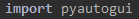
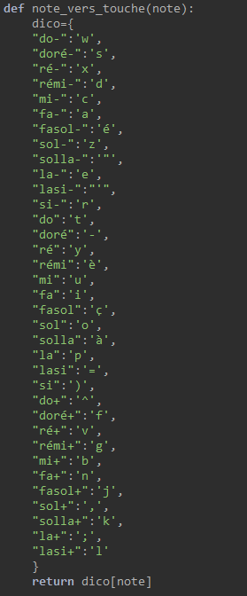

Certes c'est pas si lisible que cela mais ça reste assez cohérent. Avec ce schéma, on va donc pouvoir composer un morceau mais depuis notre IDE.

Nos morceaux seront notés : "jojo" et "silhouette"
Le bot reconnaît les touches du site en incluant un dictionnaire permettant de différencier les notes (do,ré,mi...) des touches du clavier. En effet le piano virtuel peut également être joué avec les touches du clavier. Voici un schéma montrant toutes les touches du clavier qui réagissent au piano virtuel :
Certes c'est pas si lisible que cela mais ça reste assez cohérent. Avec ce schéma, on va donc pouvoir composer un morceau mais depuis notre IDE.
Avant de pouvoir coder le morceau, on doit assimiler les touches au notes du piano, pour cela, nous allons définir une fonction qui va prendre en chrage les notes de musiques pour les assimiler aux touches du clavier, pour pouvoir faire en sorte que le bot puisse reconnaître les touches. Pour que le programme puisse jouer les notes sur le site web, nous avons installé un package nommé PyAutoGUI . Ce package permet que le programme intéragit avec les touches et la souris du clavier et donc qu'on puisse intéragir avec la page avec les fonctions.
Package PyAutoGUI :
Fonction pour lier le programme avec les touches :

On rajoute également une autre fonction (click) permettant donc à la souris d'intéragir avec le piano, (d'après le schéma, le clic servira pour la note la plus aigue du piano)

L'écran est en version 2D c'est-à-dire avec 2 dimensions, qui sont x et y, comme dans un repère orthogonal
Lorsque qu'on va permettre au programme de cliquer sur la touche la plus aigue, on devra entrer du coup les coordonnées x et y, la position de la souris en fonction de l'écran du PC
Une fois cela fait, il nous reste alors à assimiler alors les touches du clavier aux notes du piano (on va s'aider su schéma). Pour cela, nous allons définir un dictionnaire, qui va assimiler chaque note du piano virtuel par une touche du clavier, comme le schéma.
Dictionnaire Notes->Clavier
Et on va rajouter également une fonction :
Fonction pour lier les string des notes du piano au touches du clavier :

Grâce à ce dictionnaire, ces fonctions, et PyAutoGUI, on va alors commencer à lier le site au programme.
On va donc essayer de créer le lien entre le programme et le site à la page suivant : Page n°2